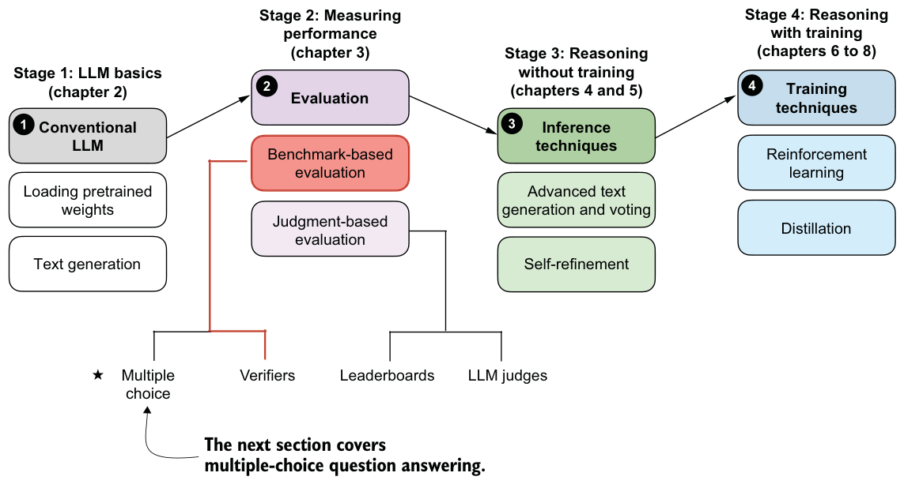
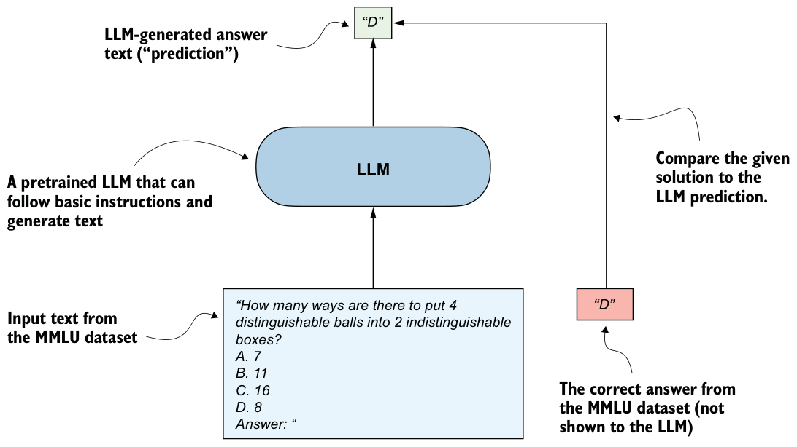

F.2Evaluating answer-choice accuracy
Historically, one of the most widely used evaluation methods has been multiple-choice benchmarks such as MMLU (short for Massive Multitask Language Understanding, https://huggingface.co/datasets/cais/mmlu).
Figure F.2 shows a single example from the MMLU dataset. The complete MMLU dataset consists of 57 subjects (from high school math to biology) and about 16 thousand multiple-choice questions in total. Performance is measured in terms of accuracy (the fraction of correctly answered questions); for example, the score would be 87.5% if 14,000 out of 16,000 questions are answered correctly.


Multiple-choice benchmarks, such as MMLU, test an LLM’s knowledge recall in a straightforward, quantifiable way similar to standardized tests, many school exams, or theoretical driving tests.
Note that figure F.2 shows a simplified version of multiple-choice evaluation, where the model’s predicted answer letter is compared directly to the correct one. Other popular methods use log-probability scoring (log probabilities are discussed in more detail in chapter 4).
The following subsections illustrate how the MMLU scoring shown in figure F.2 can be implemented in code. End-to-end MMLU scripts, including the different scoring variants, will be provided as bonus materials in this book’s code repository.
F.2.1Loading the model
Before we can evaluate the model on MMLU, we have to load the pretrained model. The following code is identical to listing 3.1.
from pathlib import Path
import torch
from reasoning_from_scratch.ch02 import get_device
from reasoning_from_scratch.qwen3 import (
download_qwen3_small, Qwen3Tokenizer,
Qwen3Model, QWEN_CONFIG_06_B
)
device = get_device()
torch.set_float32_matmul_precision("high")
# device = "cpu"WHICH_MODEL = "base"if WHICH_MODEL == "base": download_qwen3_small(
kind="base", tokenizer_only=False, out_dir="qwen3"
)
tokenizer_path = Path("qwen3") / "tokenizer-base.json"
model_path = Path("qwen3") / "qwen3-0.6B-base.pth"
tokenizer = Qwen3Tokenizer(tokenizer_file_path=tokenizer_path)
elif WHICH_MODEL == "reasoning":
download_qwen3_small(
kind="reasoning", tokenizer_only=False, out_dir="qwen3"
)
tokenizer_path = Path("qwen3") / "tokenizer-reasoning.json"
model_path = Path("qwen3") / "qwen3-0.6B-reasoning.pth"
tokenizer = Qwen3Tokenizer(
tokenizer_file_path=tokenizer_path,
apply_chat_template=True,
add_generation_prompt=True,
add_thinking=True,
)else:
raise ValueError(f"Invalid choice: WHICH_MODEL={WHICH_MODEL}")
model = Qwen3Model(QWEN_CONFIG_06_B)
model.load_state_dict(torch.load(model_path))
model.to(device)
USE_COMPILE = False
if USE_COMPILE:
torch._dynamo.config.allow_unspec_int_on_nn_module = True
model = torch.compile(model)F.2.2Checking the generated answer letter
Now we’ll implement the simplest and perhaps most intuitive MMLU scoring method, which relies on checking whether a generated multiple-choice answer letter matches the correct answer. This is similar to what was illustrated in figure F.2.
We will work with an example from the MMLU dataset:
example = {
"question": (
"How many ways are there to put 4 distinguishable"
" balls into 2 indistinguishable boxes?"
),
"choices": ["7", "11", "16", "8"],
"answer": "D",
}Next, we’ll define a function to format the LLM prompts.
def format_prompt(example):
return (
f"{example['question']}\n"
f"A. {example['choices'][0]}\n"
f"B. {example['choices'][1]}\n"
f"C. {example['choices'][2]}\n"
f"D. {example['choices'][3]}\n"
"Answer: "
)Let’s execute the function on the MMLU example to get an idea of what the formatted LLM input looks like:
prompt = format_prompt(example)
print(prompt)The output is as follows:
How many ways are there to put 4 distinguishable balls into 2
indistinguishable boxes?A. 7
B. 11
C. 16
D. 8
Answer:The preceding model prompt provides the model with a list of answer choices, and it ends with an "Answer: " text that encourages the model to generate the correct answer.
While this is not strictly necessary, it can sometimes be helpful to provide additional questions along with the correct answers as input so that the model can observe how it is expected to solve the task. (For example, cases where five examples are provided are known as 5-shot MMLU.) However, for current generations of LLMs, in which even the base models are quite capable, this is not required.
Loading different MMLU samples
datasets library (which can be installed with pip install datasets or uv add datasets):from datasets import load_dataset
configs = get_dataset_config_names("cais/mmlu")
dataset = load_dataset("cais/mmlu", "high_school_mathematics")
example = dataset["test"][0]
print(example)"high_school_mathematics" subset. To get a list of the other subsets, use the following code:from datasets import get_dataset_config_names
subsets = get_dataset_config_names("cais/mmlu")
print(subsets)Next, we’ll tokenize the prompt and wrap it in a PyTorch tensor object as input to the LLM (similar to what we did in chapter 2):
prompt_ids = tokenizer.encode(prompt)
prompt_fmt = torch.tensor(prompt_ids, device=device).unsqueeze(0)Now we’ll define the main scoring function, which generates a few tokens (eight by default) and extracts the first instance of the letter A, B, C, or D that the model prints.
from reasoning_from_scratch.ch02 import (
generate_text_basic_stream_cache
)
def predict_choice(
model, tokenizer, prompt_fmt, max_new_tokens=8
):
pred = None
for t in generate_text_basic_stream_cache(
model=model,
token_ids=prompt_fmt,
max_new_tokens=max_new_tokens,
eos_token_id=tokenizer.eos_token_id,
):
answer = tokenizer.decode(t.squeeze(0).tolist())
for letter in answer:
letter = letter.upper()
if letter in "ABCD":
pred = letter
break
if pred:
break
return predWe can now check the generated letter using the function from listing F.3:
pred1 = predict_choice(model, tokenizer, prompt_fmt)
print(
f"Generated letter: {pred1}\n"
f"Correct? {pred1 == example['answer']}"
)This is the result:
Generated letter: C
Correct? FalseAs you can see, the generated answer is incorrect (False) in this case.